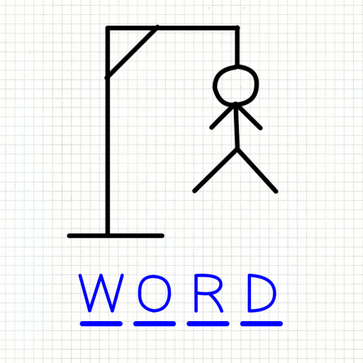

Lab 4 - Pseudocoding and Problem-Solving
Challenge
The challenge required us to create an outline of a unique activity and a simple computer game. Then we had to turn the outline into pseudocode and place it into our html code.
Problems
A problem that came up was formatting the preformatted text, but I resolved it with a quick Google search.
Reflection
I'm happy that the assignment came out the way I had hoped. I'm looking forward to the next lab.
Results

Bronze Casting Outline: - Make positive *** found object *** sculpt object - Make negative of positive *** plaster mold *** rubber mold - Make a positive from the negative *** pouring melted wax *** sculpt wax - Make negative of positive *** ceramic coating *** firing ceramic *** melting wax out of mold - Make positive *** pour melted bronze into negative *** breakout destroy negative to reveal positive - Patina *** chemicals and flames *** lacquer // SIMPLE COMPUTER GAME OUTLINE: // Creating a Hangman game: // - Generate a word at random // - For each letter, print an underscore // *** Hide letters from user // - Print post for hanging figure // - Print English alphabet for user // - User provides input by clicking letters from the alphabet // *** If input is incorrect--not a letter or in the word--print figure part "n" // *** If input is correct, print all letters that are the same as the input // - When all letters in the word are validated, flash victory screen // *** If "n" equals 6, flash lose screen